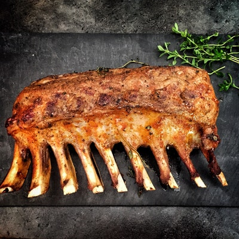

A steak (from Old Norse steik, “roast”) is a cut of meat (usually beef). Most steaks are cut perpendicular to the muscle fibres, improving the perceived tenderness of the meat. In North America, steaks are typically served grilled, pan-fried, or broiled. The more tender cuts from the loin and rib are cooked quickly, using dry heat, and served whole. Less tender cuts from the chuck or round are cooked with moist heat or are mechanically tenderised.
